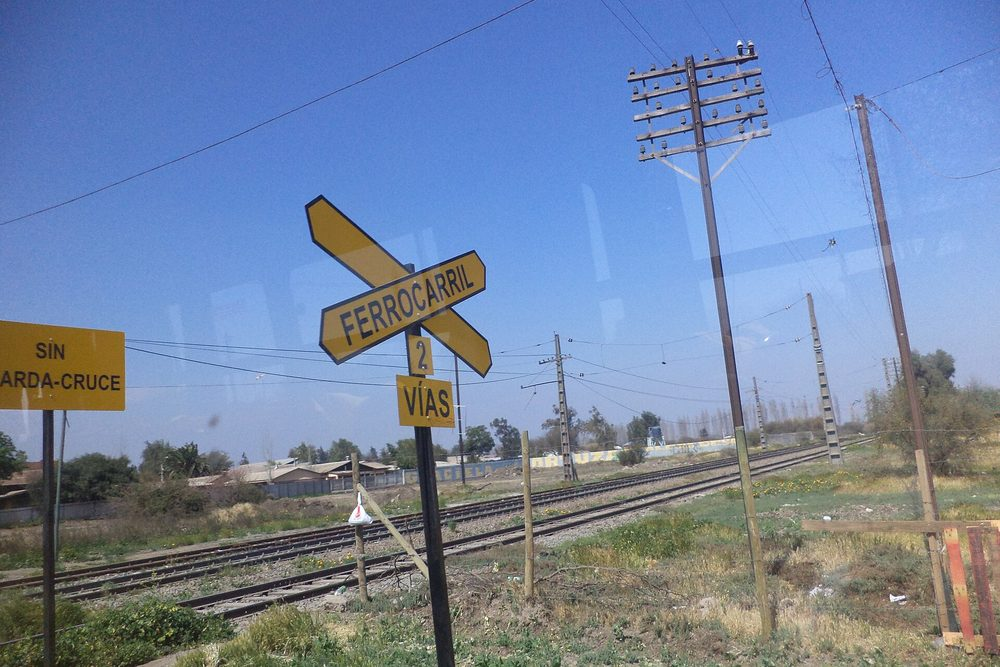
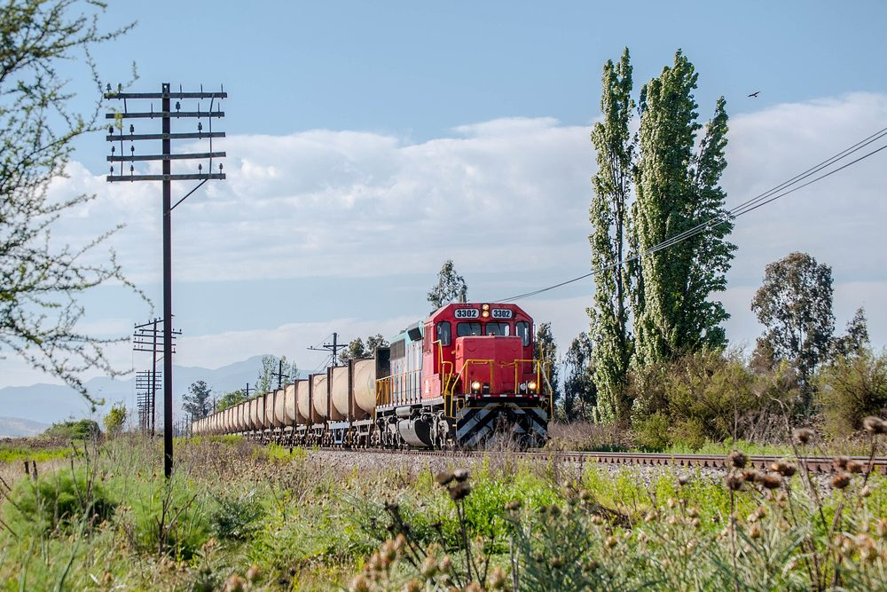

El contexto
El crecimiento de la demanda de viajes en el eje norte de la Región Metropolitana planteó la necesidad de evaluar un acceso ferroviario capaz de absorber parte del tránsito y mejorar la conectividad intermodal. La decisión de inversión requería estimaciones de demanda robustas y una comparación transparente de alternativas de trazado.
El desafío
Las fuentes tradicionales de información de transporte no capturaban con suficiente resolución espacial los patrones de viaje en la zona. Se necesitaba reconstruir una matriz origen-destino confiable y proyectarla a horizontes de evaluación, integrando distintas fuentes sin perder trazabilidad metodológica.
Qué hicimos
- Depuración y consolidación de mediciones de tránsito en terreno y conteos automáticos.
- Construcción de una matriz origen-destino única integrando encuestas y datos anonimizados de telefonía móvil.
- Modelación de la red vial y ferroviaria, y asignación multimodal de la demanda.
- Evaluación social y comparación de tres alternativas de trazado bajo distintos escenarios.
La evidencia espacial permitió comparar alternativas sobre una base común y hacer explícito cada supuesto de demanda ante el mandante.
La red, visualizada
Representación esquemática de la red analizada y de los principales flujos origen-destino sobre el corredor. La visualización geoespacial es parte del entregable: hace legible el modelo para equipos técnicos y para la toma de decisiones.
El resultado
El estudio entregó una matriz origen-destino validada, proyecciones de demanda por alternativa y una evaluación que ordenó las opciones según su desempeño técnico y económico. El mandante contó con una base trazable para priorizar la inversión y avanzar a las siguientes etapas de diseño.
Material del proyecto


Fotos de terceros, con licencia libre, que ilustran el territorio del estudio: Vía férrea hacia el norte de Santiago, de Falk2 (CC BY-SA 4.0) (imagen de cabecera); Vías en Batuco, comuna de Lampa, de Ciberprofe (CC BY-SA 3.0); Tren de carga en la Región Metropolitana, de EL GUILLE! (CC BY 2.0). Recortadas y reducidas.


.jpg){kind=link}